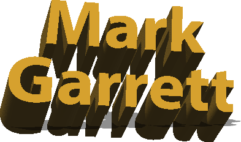

Selected Exhibitions
As Artist
- April-May 2010 - Future/Tense - Autobody Fine Art Gallery,
Alameda, CA
- August 2008 - Systems of Decay - DVC Gallery, Pleasant Hill, CA
- September 2004 - Barely Legal:Danger - Signal 66 Gallery -
Washington, DC
- September 2004 - Danger - LH Horton Jr. Gallery, Stockton, CA
- September 2004 - Politics - Diablo Valley College College,
Pleasant Hill, CA
- May 2004 - Danger - Off the Preserve!, Napa, CA
- March 2003 - Honorable Mention for “Country 10” at Tensecondfilms
- March 2003 - “Country” included on Res Magazine DVD
- March, 2000 - Noise at THAW, Festival of video, film and digital
media - University of Iowa, Iowa City, IA
- March, 1999 - Festival of video, film and digital media -
University of Iowa, Iowa City, IA
- Feb, 1999 - Hubbub - Works Gallery, San Jose, CA
- January, 1999 - New Media, New Year - Silicon Valley Institute of
Art and Science, San Jose, CA
- December, 1998 - Silent Night Auction - Works Gallery, San Jose,
CA
- January, 1998 - The Fourth Annual Artist's Valentines - Richard L.
Nelson Gallery, Davis, CA
- June , 1997 - MFA Exhibition - UCDavis MFA Exhibition, Davis, CA
- May, 1996 - Big Bundle of Joy - UCDavis MFA Exhibition, Pence
Gallery, Davis, CA
- April, 1996 - On Idea and Behaviour - Berry, Hartell, Evers and
Osborne, San Francisco, CA- 2 Person
Exhibition
- March, 1996 - Bio/Graph - Buehler Alumni Center Gallery, Davis, CA
- January, 1996 - The Third Annual Artist's Valentines - Richard L.
Nelson Gallery, Davis, CA
- September, 1995 - artreach - San Francisco, CA
- August, 1995 - Worth a Thousand Words Exhibition - Benham Studio
Gallery, Seattle, WA
- June, 1995 - 6th Biennial 7-State Juried Exhibition - Dinnerware
Artists' Cooperative Gallery, Tucson, AZ
- May, 1995 - The Last Frontier - Center for the Visual Arts,
Oakland, CA
- August, 1994 - Cafe Matisse, San Jose, CA - 2 Person Exhibition
- April, 1994 - Selections '94 - Eye Gallery, San Francisco, CA
- December, 1992 - Blue-Lite Invitational - Mars Gallery, Phoenix,
AZ
- November, 1992 - Two Person Exhibition - Cochise College, Douglas,
AZ - 2 Person Exhibition
- August, 1992 - Club Congress, Tucson, AZ - Solo Exhibition
- June, 1992 - 2 Contrary: A Two Person Exhibition - Central Arts
Collective, Tucson, AZ- 2 Person Exhibition
- September, 1991 - Blue-Lite Invitational - Mars Gallery, Phoenix,
AZ
- January, 1991 - Seasonal Perceptions - Central Arts Collective,
Tucson, AZ- Solo Exhibition
- May, 1989 - Parallel Visions - Central Arts Collective, Tucson,
AZ- Solo Exhibition
- October, 1989 - Alumni Awards Exhibition - University of Arizona
- October, 1988 - Alumni Art Exhibition - University of Arizona
- September, 1988 - One Man Show - Todd Walker Gallery, University
of Arizona- Solo Exhibition
Publications Include
- Artweek Magazine
- Contra Costa Times
- Oakland Tribune
- San Francisco Magazine
- Res Magazine/DVD
- Chromophobia Magazine
- Arizona Daily Star
As Curator
- August 2008 - Systems of Decay - DVC Gallery, Pleasant Hill, CA
